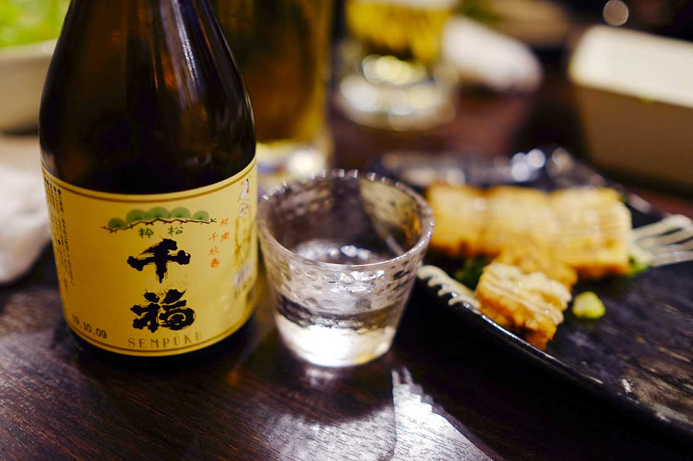
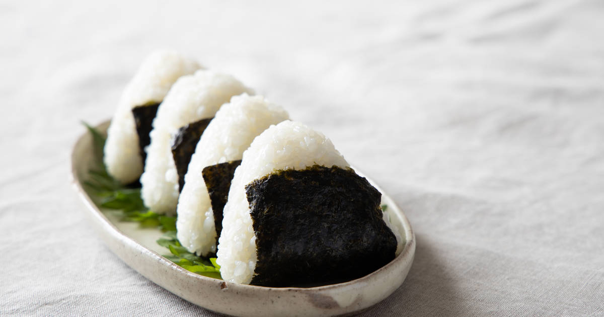

The traditional food of Japan is based on rice with miso soup and
other dishes; there is an emphasis on seasonal ingredients. Side dishes often consist of fish, pickled vegetables,
and vegetables, and vegetables cooked in broth.
Ramen
Ramen is a Japanese noodle dish that fundamentally uses Chinese wheat noodles, flavored broth, and toppings.
An adapted recipe from Chinese cuisine, ramen has become important to Japanese culture and multiple ramen
styles began emerging in different areas of Japan.


Sake
A
Sake is an alcoholic drink made from fermented rice. Often referred to as nihonshu (日本酒) in Japanese (to
differentiate it from "sake" which in Japanese can also refer to alcohol in general), the drink enjoys
widespread popularity and is served at all types of restaurants and drinking establishments.
Sushi
Sushi is one of the first foods that spring to mind when we think about Japanese cuisine. This delicacy was
one of the first Japanese dishes to be exported to the US after the Meiji Restoration in 1868, and since then
its popularity has steadily increased year after year.


Onigiri
Onigiri is a traditional Japanese comfort food that basically consists of steamed rice shaped into a triangle,
ball, or cylinder and wrapped in nori (dried seaweed). This dish truly pays testament to the inventiveness of
Japanese food artists.